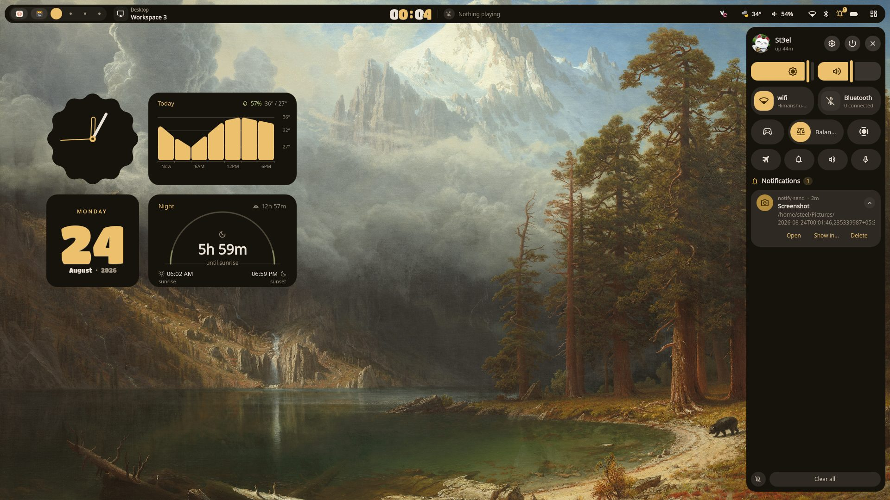
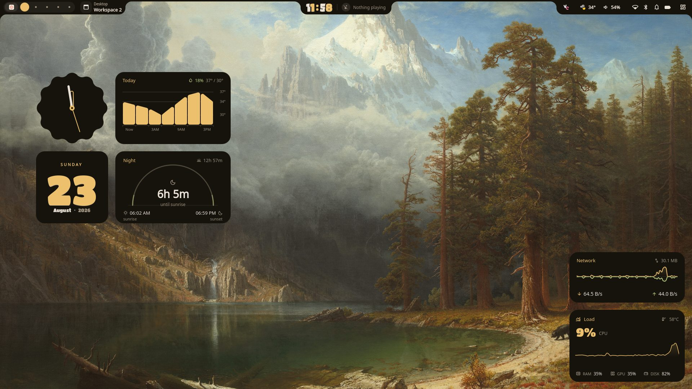

A complete desktop shell for Hyprland
Bar, dashboard, launcher, notification shade, lock screen and a widget canvas you arrange yourself. One Quickshell process, configured from a settings panel rather than a dotfile.
$ bash <(curl -fsSL https://raw.githubusercontent.com/iamSt3el/Nebula/master/install.sh)

The dashboard and notification shade, opened from the bar.
One launcher, five modes
The prefix you type decides what the window searches, so there is no second tool to bind and no mode to switch into.
Applications support fuzzy search, pinning and categories. Read the launcher page
What you get
Shell
A bar in pill or full-width form, plus a slim secondary bar for your other monitors. A dashboard with sliders, quick toggles and power profiles. An Android-style notification shade that groups by app and expands per group. A workspace overview, a dock with hover previews, brightness and volume OSDs, a lock screen and a session menu.
There is also an optional greetd greeter (greeter.qml)
if you want the login screen to match the rest.
Widgets
A full-screen canvas you arrange yourself: analog and digital clocks, date cards, weather, system and network monitors, battery, temperature, media players, a CAVA spectrum, sticky notes, tasks, a pomodoro timer, RSS, moon phase and a sun arc.
Tools
Nebula Drop moves files between your phone and PC over Wi-Fi. The shell serves a token-scoped page and shows a QR code, so there is nothing to install on the phone.
Plus a clipboard manager with image previews, screenshots through grimblast and swappy, native screen recording with a live pill, a wallpaper picker that searches Wallhaven, a live disk treemap, calendar holidays detected from your timezone, a cheat sheet, a music visualizer and a game mode.
Theming
Colours are extracted from your wallpaper with
materialyoucolor and written to
~/.cache/quickshell/colors.json. The shell retints itself, and
other apps can follow: btop, kitty, GTK, Qt, waybar, tmux and starship each
pick it up through their own template. How that
works
Settings
Everything is configured in the shell itself — Theme, Appearance, Sound,
Media, Networking, Bluetooth, Notifications, Weather, Widgets, Sleep
and Storage — and stored in
~/.cache/quickshell/settings.json. There is no config file to
learn.

The widget canvas. More screenshots
Documentation
Nebula is only the shell. It does not ship, generate or edit your Hyprland config — these pages cover what you wire up yourself.